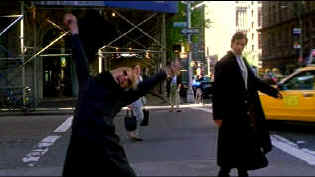

| Kate and Leopold (SE)/ B, B+ |
| Miramax/2001/118/ANA 1.85 |
There's a lot of good material feathering the
periphery of Kate and Leopold, a standard, but sweet New York
romance. Combining fateful time travel with New York in summer works
visual wonders. Kate and Leopold may fail to rise to inspirational
heights. One expects more guffaws out of the raw material and set-up, but
there are nothing more than a smattering of titters. But that's a
strength of the film too. Comic elements are downplayed and romance rules!
Writer/director James Mangold reaches into a
subtle creative bag of script elements. He pokes fun at advertising with
special fervor and in his broadest strokes, looks at 19th versus 21st
century manners and values, and shapes the various parts of Kate and
Leopold entertaining but lightweight film.
 |
|
A quintessential Meg Ryan
New York moment. ©Miramax
|
Meg Ryan is her usual effervescent self as
advertising exec Kate McKay who must make some major life decisions when
Leopold, a royal visitor from another age, shows up in modern New York.
Subtract a couple of points of Meg' playing cute gets under your
skin. Hugh Jackman makes an upright and surprisingly cool-minded
Leopold, a British Duke reaching the point of financial desperation while
staying with his American uncle. Aside from a few wide-eyed looks at
modern life, nothing really seems to phase the refugee from the late 19th
century, but Jackman does bring it off admirably. Liev Schreiber is a
trifle too artificial as Kate's neighbor and beau who gets everything
started with his newfound discovery. Brecklin Meyer adds his own brand of
good-natured sizzle as Kate's amiable younger brother.
Mangold's production team is well-chosen. Rolfe
Kent's imminently charming score is an essential compliment to Stuart
Dryburgh's outstanding cinematography. Mark Friedberg's production design
captured the 19th century with grand eloquence.
Kate and Leopold comes in bright summer colors with
excellent saturation. Detail is excellent with fine elements cleanly
resolved and artifacts kept minimized. There's light output to spare in
the bright transfer. Shadow detail is very good, especially in the 19th
century scenes. The lighting schemes are nicely replicated. Black levels
are rich and skin tones delivered with a nice variety and accurate range.
The Dolby Digital 5:1 surround captures the New York ambiance very nicely.
Kent's music floats around and embellished the image winningly.
Disney has packed this DVD with generous special
edition morsels. Two versions of the film are included, the original
theatrical version (118m) and a slightly altered director's cut (123m).
The James Mangold commentary is filled with salient information as well as
philosophical elements. Seven deleted scenes may be viewed with or without
commentary from Mangold Also included is a pretty standard 15-minute
making of featurette and a three minute costume examination. |
|
|
|

Selections from the Feature
Archive include articles on Akira Kurosawa, Frank Darabont, Blonde Bimbos, Hollywood Street Gangs, or Vietnam: The Hollywood Pariah, and many
more....
Sturges Emerges

Preston Sturges was Hollywood's resident comic genius for more
than a decade. His movies are timeless. Click on his image to read all
about it.

The Movie Poster Archive
includes extensive poster images from the films of stars like Susan
Hayward, Kirk Douglas, Katharine Hepburn and many more. Our featured
star is Doris Day.


Mystery writer Fred Hunter digs into classic films on DVD. Check out his
insightful reviews at The Classics on DVD.

ISF Course Instructors Jim Burns and Kevin Miller are hosting the Digital Film Forum. Join
professionals and enthusiasts for lively home theater discussion.
 Have you visited Home Theater Talk
lately? One of the friendliest places on the Net for Home Theater and DVD
discussion, you can get help for installation problems or simply share
your opinions with other Vidiots. Have you visited Home Theater Talk
lately? One of the friendliest places on the Net for Home Theater and DVD
discussion, you can get help for installation problems or simply share
your opinions with other Vidiots.

Manufacturer of computer-video interfaces, switchers, distribution
amplifiers, computer-video scan converters, and high resolution cable.
Found in many high end home theater systems.
|